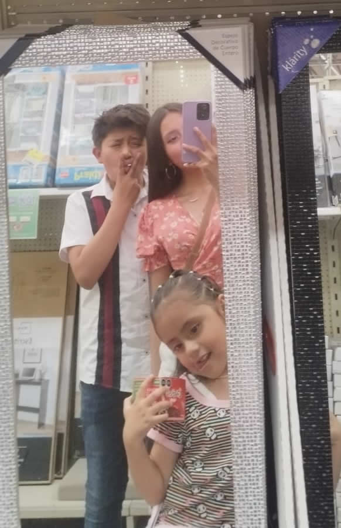
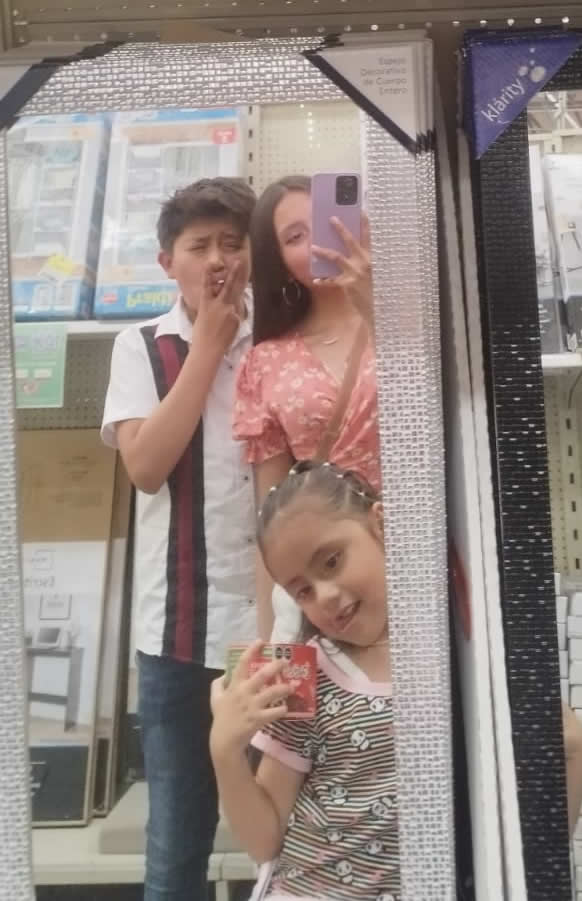

|
 |
La familia es incondicional y en mi caso es la unión más bonita que eh visto, llena de amor y cariño.
|
 |
Se compone por mi papá Ansberto José Hernández Rosas, que es el mejor papá para mi
Mi mamá Ana Victoria Sánchez Islas la mujer más luchona de todo el mundo
Mi hermano Axel Jadiel Hernández Sánchez super cariñoso
Mi hermanita Analí Zoé Hernández Sánchez lo mejor que nos ha pasado
Los amo demasiado